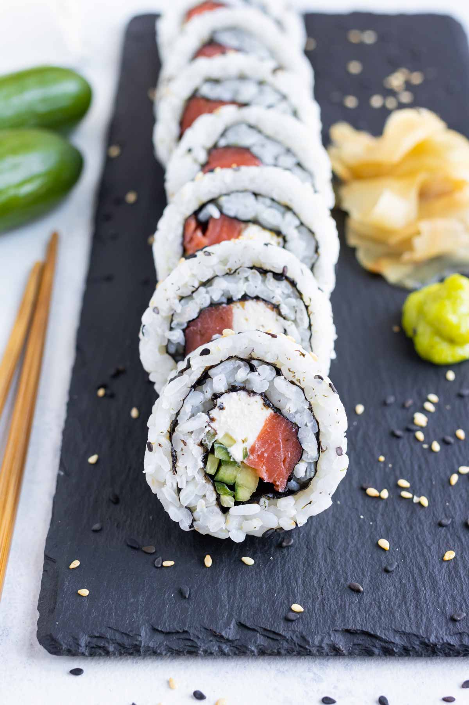
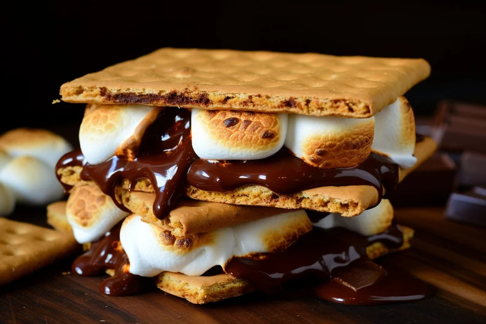

Sushi
Sushi is so delicious! The best part about sushi is the many varieties it comes in. A few of my favorite sushi rolls are eel rolls, Philadelphia rolls, and shrimp tempura rolls.
Mashed Potatoes

Mashed potatoes are so simple, yet so good. Cheesy, roasted garlic, buttermilk...You name it! They are all my favorites.
S'mores
Would I like some dessert? Yes please! S’mores will always be the perfect dessert to me. In fact, anything s’mores flavored is an automatic thumbs up. I love s’mores so much that I even have a s'more maker.